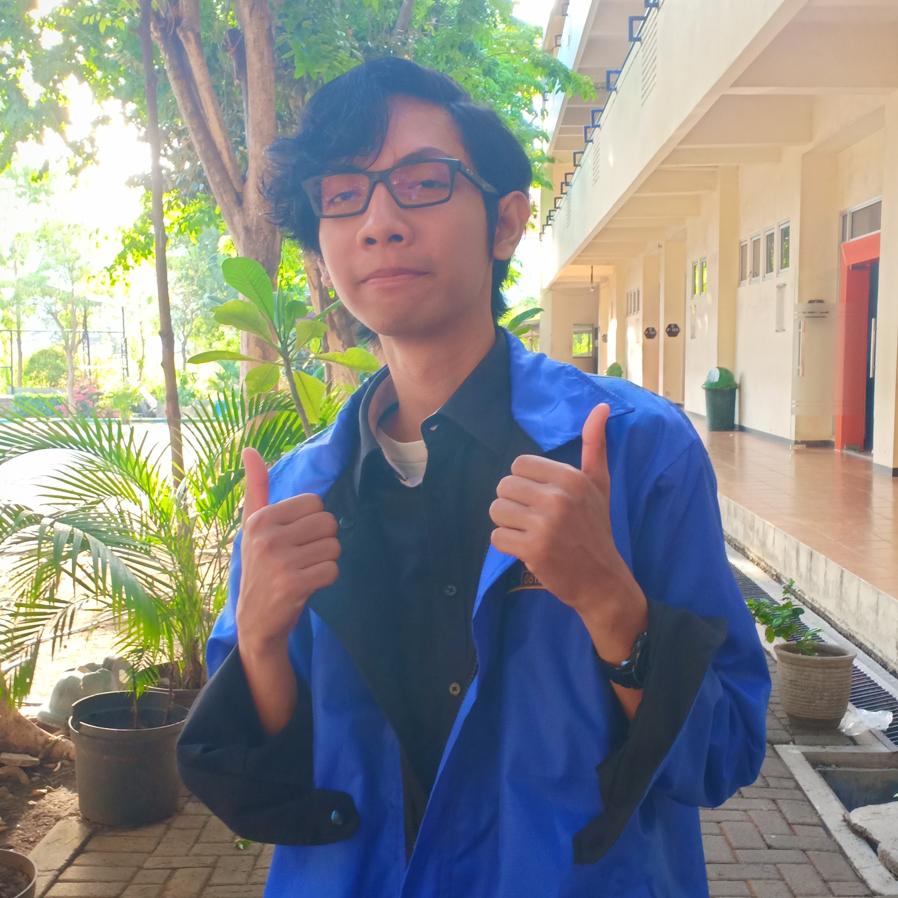

Home
Pendidikan
Pengalaman
Pelatihan
Kontak
Curiculum Vitae
Informasi Umum

Nama : Fandi Wahyu Rusydi
NRP : 05111840000108
Asal : Surabaya
Agama : Islam
Kelahiran : 1999
Kewarganegaraan : Indonesia
Pendidikan
SD Muhammadiyah 2 Taman - Sidoarjo
SMP Negri 21 Surabaya
SMA Negri 15 Surabaya
Teknik Informatika - Institut Teknologi Sepuluh Nopember Surabaya
Pengalaman
-Anggota di Unit Kegiatan Mahasiswa - ITS Badminton Club
-Anggota L-35 di Himpunan Mahasiswa Teknik Lingkungan ITS (HMTL ITS)
-Anggota C22 di Himpunan Mahasiswa Teknik Computer-Informatika ITS (HMTC ITS)
-Staff Kaderisasi dan Pemetaan (KDPM) di Kepengurusan HMTC Membara
-Ketua Pelaksana pada acara liburan Tcation Teknik Informatika Angkatan 2018
-Wakil Ketua pada acara TCarnival HMTC GARANG
-Divisi Hubungan Masyarakat (Humas) pada Schematics ITS 2019
-Staff Sie Perlengkapan pada ITS Open Badminton 2018
-Staff Sie Perlengkapan pada ITS Open Badminton 2019
-Staff Sie Logistik pada Environation 2018
Pelatihan
-Latihan Keterampilan Manajemen Mahasiswa Pra-Tingkat Dasar (LKMM Pra-TD) "SURVIVE"
-Latihan Keterampilan Manajemen Mahasiswa Tingkat Dasar (LKMM TD) "MILLENIUM"
-Public Relation Training BEM FTIK 2019
-Pelatihan Karya Tulis Ilmiah Tingkat Dasar (PKTI TD)
Kontak
No. Telepon : 081******017
Email : fandi*******@gmail.com
Line : fandi******